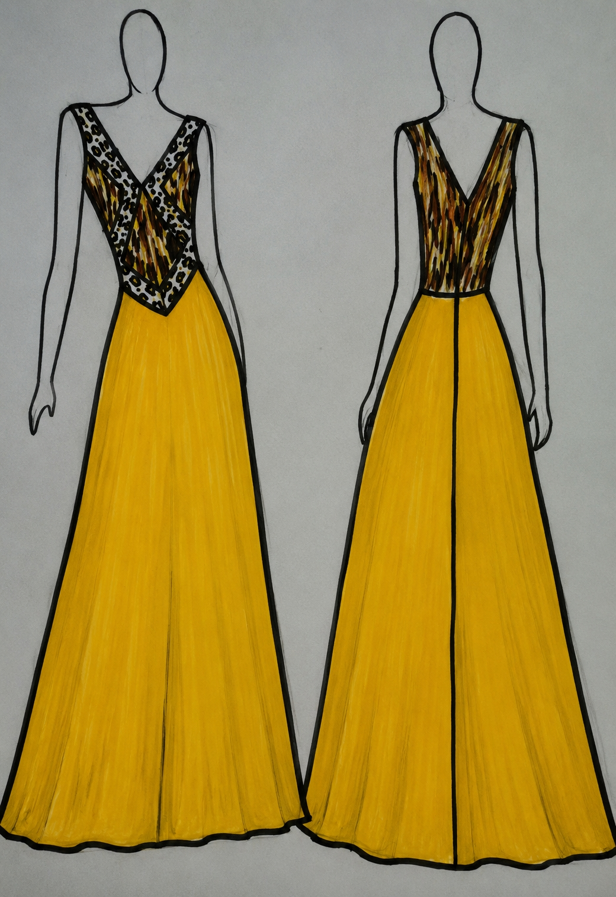
Fashion Archive · 2015
EDEN
Eveningwear Collection
EDEN is an eveningwear collection inspired by the beauty, richness and symbolism of the biblical Garden of Eden. Drawing from trees, flowers, rivers, wildlife and the serpent, the collection explores femininity, wisdom, desire and transformation through sculptural silhouettes, flowing drapery and confident colour.
The collection reflects Joycenuwa’s early exploration of storytelling through fashion, where nature and symbolism are translated into garments that celebrate elegance, confidence and the female form.
← Back to FashionInspiration
Mood Board
Natural forms, flowing water, vivid colour and the symbolism of the serpent shaped the collection’s palette, textile choices and silhouettes.
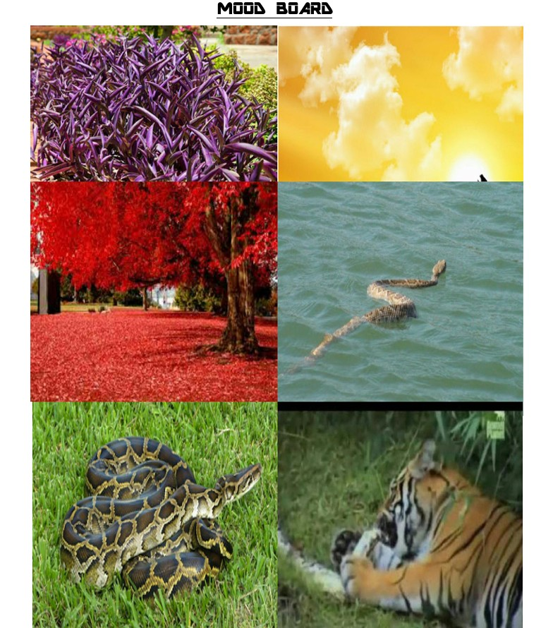
Design Process
Illustrations
These original illustrations document the development of the five looks, exploring silhouette, construction, proportion and movement before production.
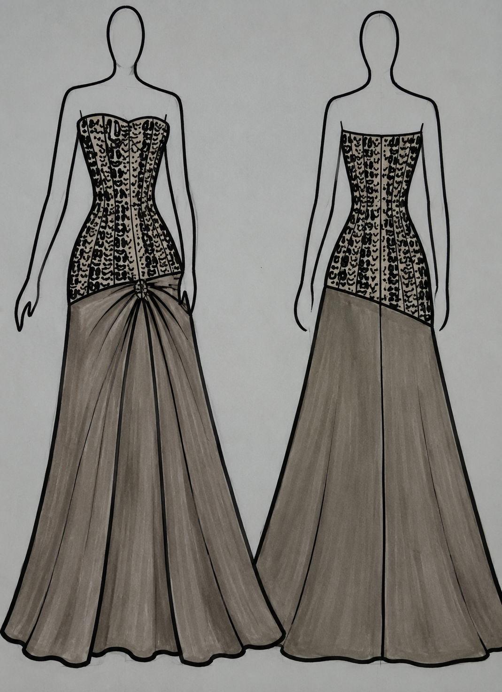
Cascade
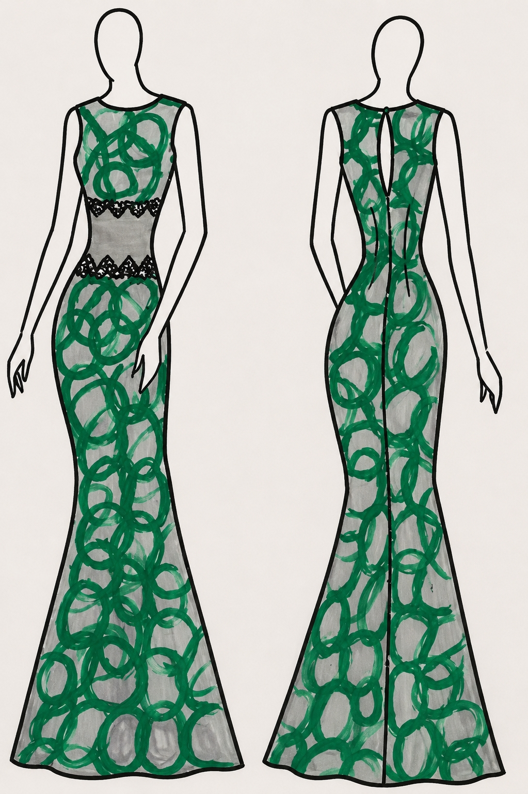
Verdure
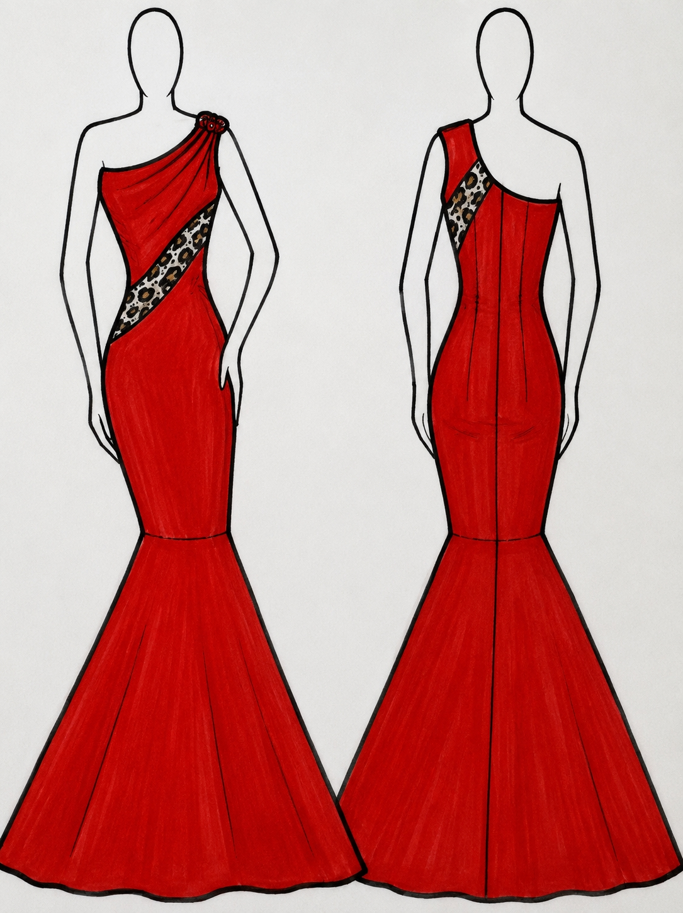
Ember
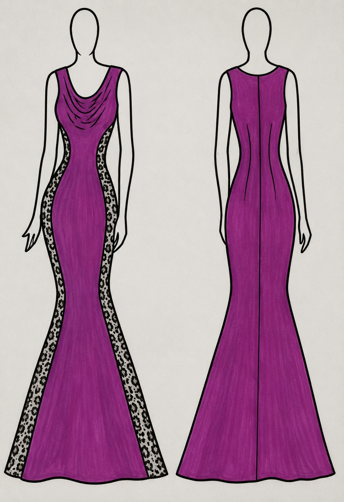
Genesis
Finished Collection
Five Looks
The completed garments translate the collection’s natural symbolism into elegant eveningwear designed around movement, confidence and sculptural femininity.
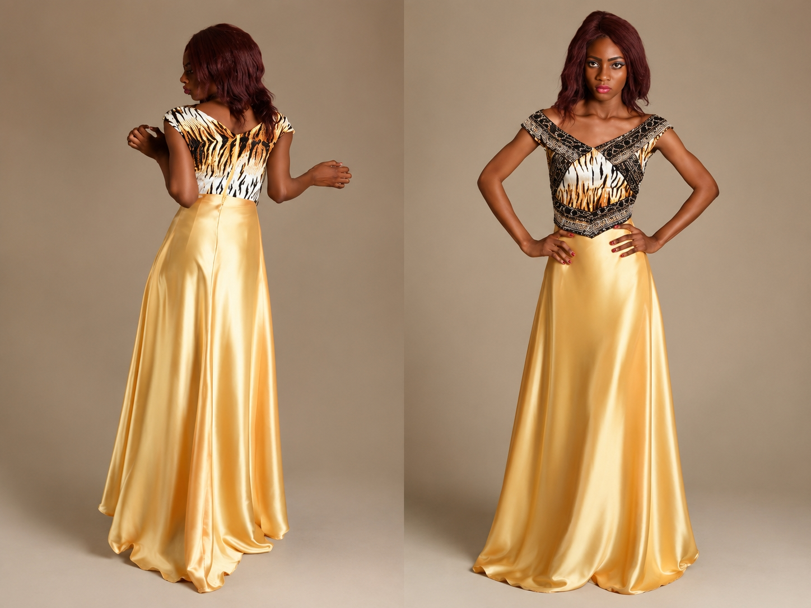
Serpent
Inspired by the serpent as a symbol of wisdom, elegance and persuasion, this look explores confidence through a sculptural silhouette and animal-inspired detail.
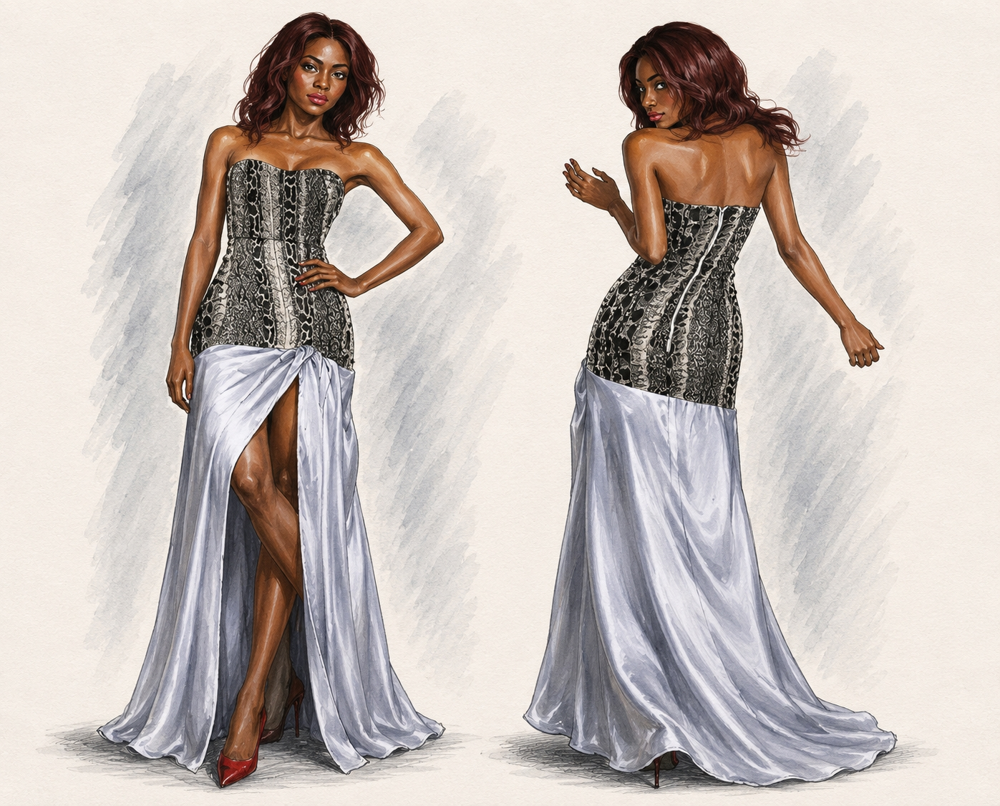
Cascade
Inspired by the rivers of Eden, flowing fabric and elongated lines create a sense of movement, grace and understated luxury.
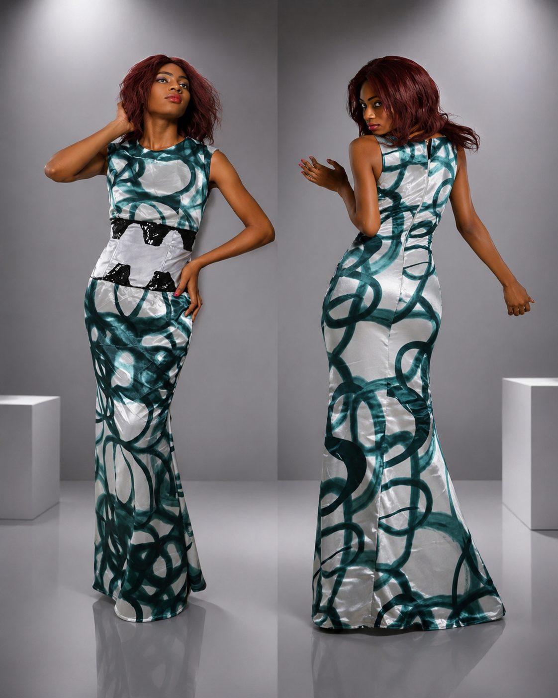
Verdure
Drawing from the lush vegetation of the garden, Verdure reflects renewal, abundance and harmony through organic pattern and a form-fitting silhouette.
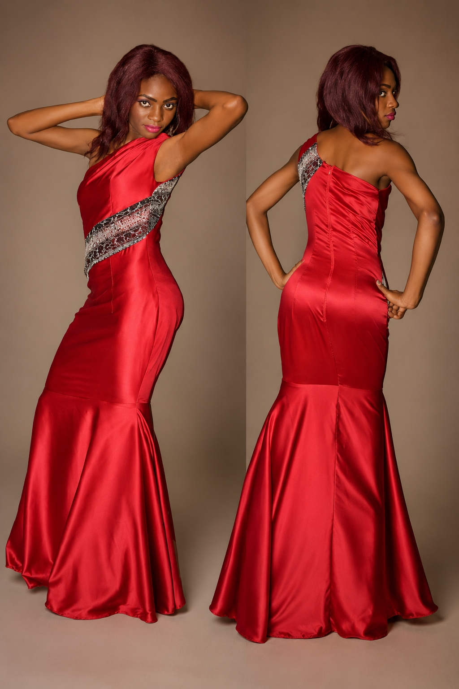
Ember
Rich colour and fluid satin evoke warmth, desire and quiet strength, transforming the evening gown into a confident expression of femininity.
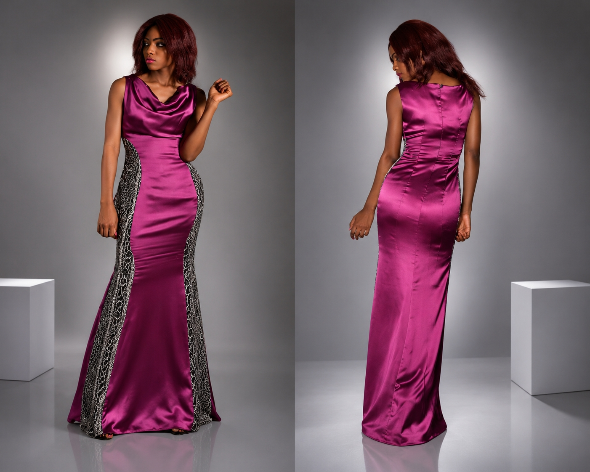
Genesis
Genesis represents beginnings, bringing together the collection’s themes of nature, elegance and transformation in a final expression of the EDEN narrative.
Presentation
On the Runway
EDEN was presented at the Nigerian Television Fashion Show in 2015. The collection was also taken through the British Council Lagos Fashion and Design Week selection process and featured at Joyce Aranuwa’s fashion-school graduation runway, where she received the Best Student award.
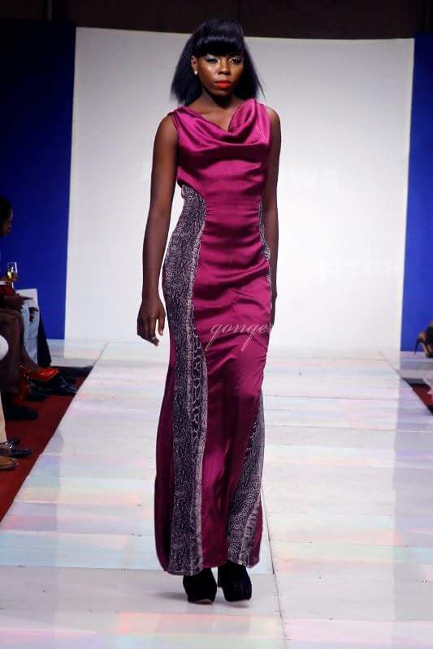
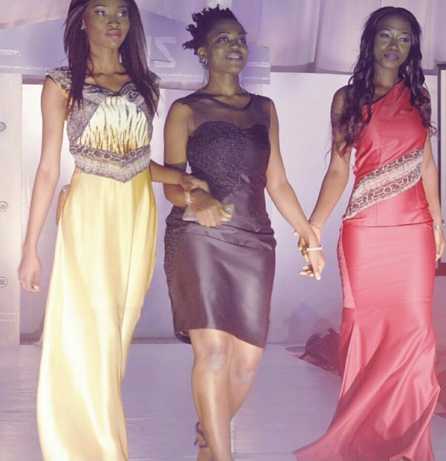